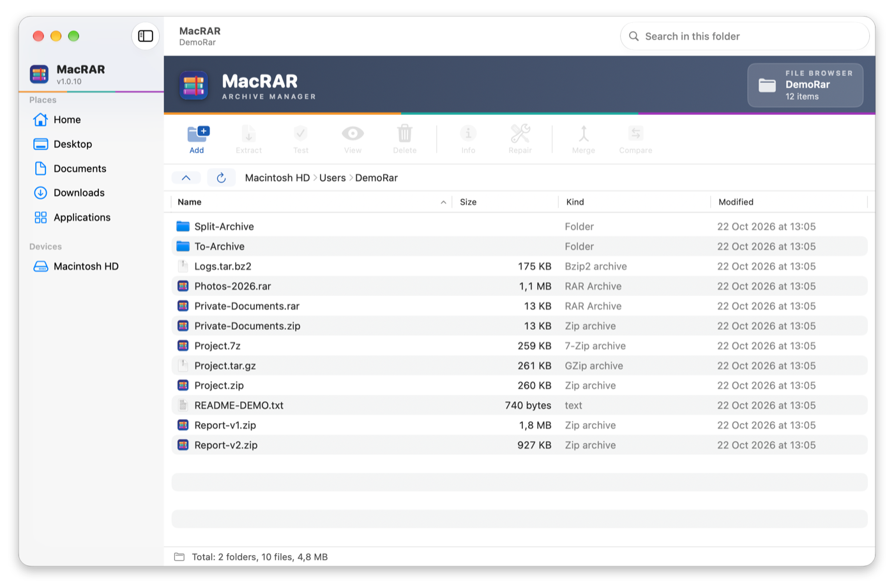
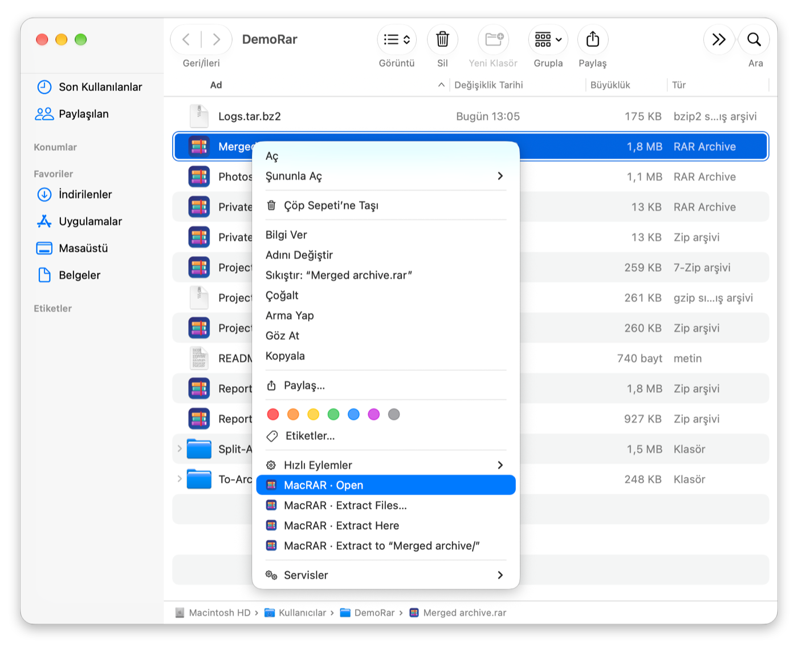

MacRAR
WinRAR tarzı arşiv yöneticisi
MacRAR, macOS için ücretsiz ve açık kaynak, WinRAR tarzı bir arşiv yöneticisidir: RAR, ZIP, 7Z ve TAR arşivlerini açar, çıkarır ve oluşturur; Finder sağ tık menüsüyle gelir.
Mac için ücretsiz bir WinRAR alternatifi; Keka, BetterZip ve The Unarchiver'a da alternatif.
MacRAR'ı macOS için indir (pkg)
Ayrıntılı belgeler · Tüm sürümler · Kaynak kod: GitLab · GitHub
Özellikler
- RAR, ZIP, 7Z ve TAR arşivlerinin içine çıkarmadan bakma
- Tümünü ya da seçilenleri çıkarma, dosyaları doğrudan Finder'a sürükleme
- RAR5/RAR4 (RARLAB'ın rar aracıyla), AES-256 parolalı ZIP, 7Z ve TAR oluşturma
- Finder sağ tık menüsü: RAR ya da ZIP olarak sıkıştır, çıkar, aç
- Arşivleri sınama, birleştirme ve karşılaştırma; RAR ve ZIP düzenleme
- macOS Anahtar Zinciri'ni kullanan parola yöneticisi
Ekran görüntüleri


Sık sorulan sorular
MacRAR ücretsiz mi?
Evet. MacRAR, GPL-3.0 lisansıyla ücretsiz ve açık kaynaktır; RAR dosyalarını açmak ve çıkarmak da ücretsizdir, çünkü RARLAB'ın ücretsiz unrar aracı uygulamayla gelir. Yalnızca RAR arşivi oluşturmak ya da düzenlemek için RARLAB'ın rar aracı gerekir; 40 gün ücretsiz denenebilir, sonrasında RARLAB lisansı ister. ZIP, 7Z ve TAR oluşturmak için hiç gerekmez.
Mac'te RAR dosyası nasıl açılır?
MacRAR'ı kurun ve içine bakmak için .rar dosyasına çift tıklayın ya da Finder'da sağ tıklayıp ana pencereyi açmadan çıkarın. Parolalı arşivler parolayı sorar.
Mac'te RAR dosyası oluşturabilir miyim?
Evet. MacRAR'ın Kurulum Yardımcısı RARLAB'ın rar aracını rarlab.com'dan tek tıkla indirir; ardından parolalı, dosya adları şifreli, kurtarma kayıtlı ya da parçalara bölünmüş RAR5 veya RAR4 arşivleri oluşturabilirsiniz.
Finder'ın sağ tık menüsünden sıkıştırıp çıkarabilir miyim?
Evet. Finder'da dosyalara sağ tıklayıp RAR ya da ZIP olarak sıkıştırabilir, bir arşive sağ tıklayıp çıkarabilir ya da açabilirsiniz. İşlem, MacRAR'ın ana penceresi açılmadan küçük bir ilerleme paneliyle yapılır.
Hangi Mac'lerde çalışır?
macOS 15 Sequoia veya üstü yüklü Apple Silicon ve Intel Mac'lerde.
macOS neden ilk seferde engelliyor?
MacRAR, ücretli geliştirici hesabı gerektiren Apple onayından (notarization) geçmemiştir. Sistem Ayarları ▸ Gizlilik ve Güvenlik ▸ Yine de Aç ile bir kez izin verin; ayrıntılar Kurulum bölümünde.
WinRAR, Keka, BetterZip ve The Unarchiver yalnızca karşılaştırma için anılmıştır; MacRAR'ın bunlarla ya da RARLAB ile bir bağı yoktur.
Kurmadan önce
Uygulamalar Apple onayından (notarization) geçmedi; bunun için ücretli geliştirici hesabı gerekiyor. Bu yüzden macOS ilk açılışta engeller. Her uygulamaya Sistem Ayarları ▸ Gizlilik ve Güvenlik ▸ Yine de Aç ile bir kez izin verin. Her sürümde SHA-256 değeri yayımlanır.